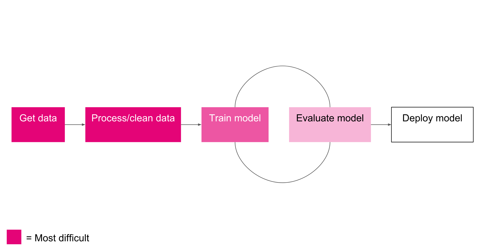

The first step in any machine learning pipeline is data acquisition. There are generally four methods of obtaining data:
The first three are fairly similar. The last provides the power to design custom features with the trade-off of money and time.
The data preparation, pre-processing and normalization steps are often the most time consuming and code-heavy part of the pipeline. It's also the most important step to get right. Most machine learning algorithms only operate well on data that is within a certain range (e.g. small values between -1.0 and 1.0 or 0.0 and 1.0) with a standard variance. Real-world data might have arbitrary values with units in the millions, or tons of outliers that need to be removed. Correctly preparing your data before using it for training is often the key to developing a successful model.
Now comes the fun part, its time to train your model (using your training data only). Training can take anywhere from a few minutes to hours or days depending on your model architecture or compute hardware. As a rule of thumb, training your model on a GPU will yield training times orders of magnitude faster than CPU training and should almost always be referenced.
During the training process, your data is iteratively fed into the model in small batches, subsets of the entire training dataset, called mini-batches. Once your model has seen all of the training data, it has completed one epoch. Training usually requires multiple epochs and ends when validation loss (error) stops decreasing. More on that soon...
Once you've trained your model, its time to evaluate its performance. You usually do this by freezing the model parameters, running the model on the test data without updating the parameters like you do during training. During evaluation the goal is to measure the trained model's error/accuracy on unseen data. Once you've got a measure of how effective your model is, its time to train another model to try and beat it. The ML pipeline often requires many iterations of training and evaluating; the goal being to reduce the error on your test data. It is not uncommon to do this 10 to 100+ times, choosing to use the model that performs the best in production. For this reason, it is important to keep track of different experiments in an organized way. An advanced technique to quickly and effectively automate the training and evaluation cycle is to use hyperparameter search.
Once you've got a trained model that performs adequately it's time to deploy it live. This process looks different for every application, but can include things like integrating it into a server-side process that handles web API requests or bundling it in a mobile application. Most models are trained to learn model weights that are then frozen during production. However, some models incorporate live unseen data into the training process. These models are said to operate, "online", and their is little distinction between training and deployment; the model is always learning.
Next: Types of Learning